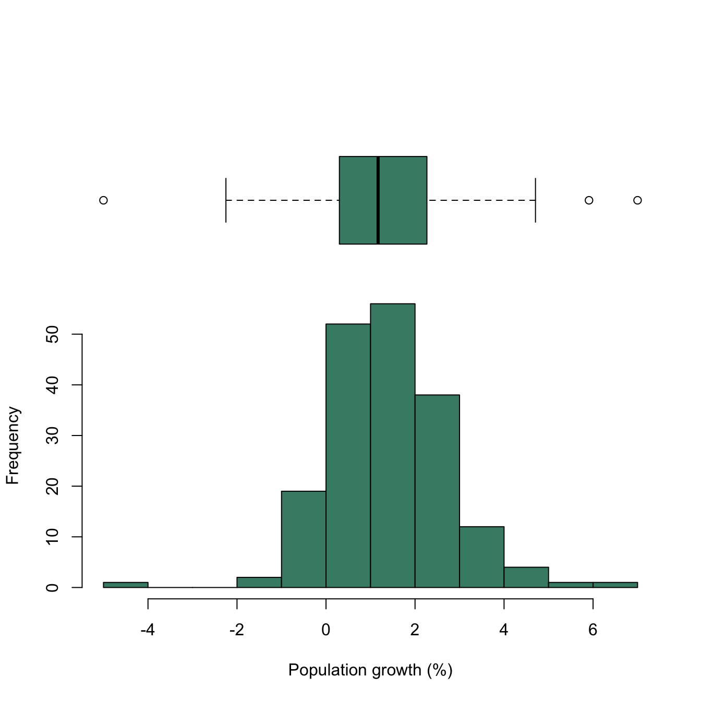
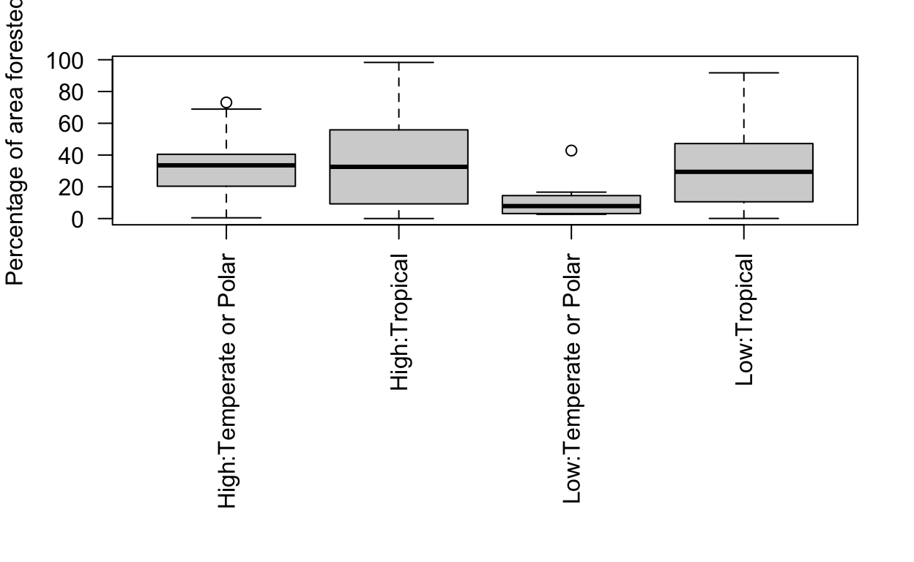
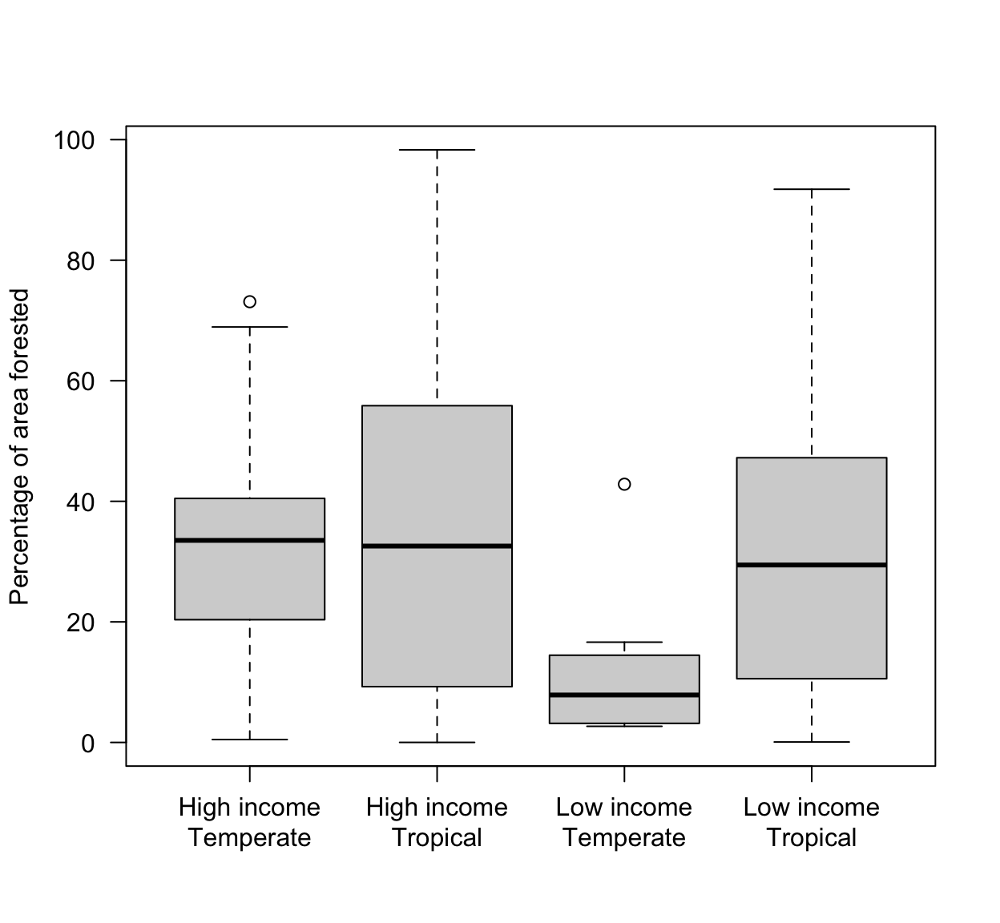
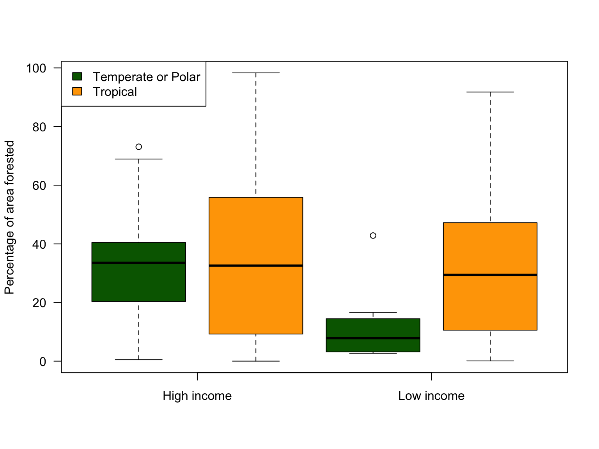

A boxplot is a way of visualising data which displays a lot of information while still being simple and easy to interpret. They are particularly useful when there you have multiple variables or different factor levels associated with a numeric variable and you want to compare them. As an example, let’s have a look at the data on population growth from the WorldBank dataset. We’ll start by looking at a frequency histogram.
hist(WorldBank$Population_growth,
main = "",
col = "aquamarine4",
xlab = "Annual population growth per country (%)")Frequency histogram of annual percentage population growth for 186 countries
You can see that this variable is roughly normally distributed, with a central tendency somewhere between 1 & 2 and a range from just below -4 to somewhere between 6 & 7. We can get more exact numbers using summary()
## Min. 1st Qu. Median Mean 3rd Qu. Max.
## -4.5366 0.4486 1.2613 1.3668 2.2836 6.7390Rather than looking at a frequency histogram, we can use a boxplot to give us much the same information. The function to do this in R is conveniently called boxplot().
boxplot(WorldBank$Population_growth,
col = "aquamarine4",
ylab = "Annual population growth per country (%)")Boxplot of annual population growth for 186 countries
If you’ve not seen one of these before it might be a bit confusing so let’s go through all the different bits one at a time.
Overall then a boxplot shows you the median, the interquartile range, the region within which roughly 99% of datapoints would be expected if the underlying distribution is normal, and any datapoints outside this region. To make this clearer, here is our frequency histogram again, this time with the boxplot plotted above it.
# Set plot area for histogram to the lower 70% of the total area
par(fig = c(0, 1, 0, 0.7))
# Plot the frequency histogram
hist(
WorldBank$Population_growth,
main = "",
xlab = "Population growth (%)",
breaks = 15,
col = "aquamarine4"
)
# set the plot area for the boxplot to the upper 60% of the total area
par(fig = c(0, 1, 0.4, 1), new = TRUE)
# Plot the boxplot
boxplot(WorldBank$Population_growth,
col = "aquamarine4",
bg = FALSE,
horizontal = TRUE,
axes = FALSE)
You can see how the median and the interquartile range indicated on the boxplot correspond to the centre of the distribution and the region with the bulk of the data present, and you can also see how the whiskers cover almost all of the range of the data, with the few extreme values showing up individually.
There is a variable in the WorldBank dataset called CO2 which is the annual CO2 production of each country in tonnes per capita. See if you can draw a boxplot of this variable and label the y-axis “Annual Carbon Dioxide Production Per Capita (t)”.
#Remember that you need to specify the WorldBank
#dataframe and give the name of the CO2 variable
#with the two separated by a dollar symbol#Use the ylab = argument to specify the y-axis label.
#The text for the label needs to be in quote marks.#Check that there's a comma between all arguments
#and that all your brackets and quote marks are
#matched.boxplot(WorldBank$CO2,
ylab = "Annual Carbon Dioxide Production Per Capita (t)")This boxplot looks very different to the one we drew in the last section. It looks as though it’s been squashed towards the bottom and stretched towards the top, and all of the extreme values that are shown are relatively large values. To understand what we’re seeing here, it will help to plot a frequency histogram for CO2 production. Don’t forget to label the axes.
# You need to use the hist() function
# The y-axis label should just be "Frequency"
# The x-axis needs a label which says what it is
# Remember that the text for axis labels goes in quote marks#Check that there's a comma between all arguments
#and that all your brackets and quote marks are
#matched.hist(WorldBank$CO2,
xlab = "Annual Carbon Dioxide Production Per Capita (t)",
ylab = "Frequency",
main = "")You can see from looking at the frequency histogram that unlike the population growth data, per capita CO2 production is strongly positively skewed. This accounts for the different shapes of the two boxplots. The approximately normal distribution of the population growth data gives us a boxplot which is roughly symmetrical above and below the median, but the strong positive skew in the CO2 production data gives a very asymmetrical boxplot, with the lower whisker, quartile and the median being close together and the rest of the plot looking as though it’s been stretched upwards. This shows us one of the great strengths of using boxplots as part of your initial exploration of your data: they don’t just give you information on where the data are located, they tell you about the shape of the data as well.
As a final exercise, here is the code we used before to draw the frequency histogram for population growth with the boxplot above it. See if you can modify this to draw the equivalent graph for CO2 production. Try changing the colour from “aquamarine4” to “steelblue” and don’t forget to make sure the axis labels are correct.
par(fig = c(0, 1, 0, 0.7))
hist(
WorldBank$Population_growth,
main = "",
xlab = "Population growth (%)",
breaks = 15,
col = "aquamarine4"
)
par(fig = c(0, 1, 0.45, 1), new = TRUE)
boxplot(WorldBank$Population_growth,
col = "aquamarine4",
horizontal = TRUE,
axes = FALSE)Boxplots can show you the shape and the location of your data, but so can frequency histograms. Why don’t we just plot histograms? The answer to this is that boxplots become really useful when we have multiple groups of data that we want to compare. If you have a variable and also a factor which divides the data in your variable into groups, then boxplot() will allow you to visualise this. Instead of entering a single variable name you need to enter a formula, with the variable on the left and the factor name on the right, with a tilde between: boxplot(variable ~ factor).
As an example, here are our population growth data plotted as boxplots with the different regions in our WorldBank dataset plotted separately. There are a few things that you might not be familiar with:
par(mar = c(12,4,2,2)) sets the margins for the plot, in the order bottom, left, top, right. I’ve made the bottom margin much bigger than usual because the region names are long and need plenty room. I’ve also added the las = 2 argument in the boxplot() function call. This makes the text for the axis labels perpendicular to the axis, so the x-axis labels are vertical.
par(mar = c(12,4,2,2))
boxplot(Population_growth ~ Region,
data = WorldBank,
ylab = "Annual population growth (%)",
xlab = "",
las = 2)Population growth data plotted for each region from the WorldBank dataset
Now you can see how a plot like this can convey a huge amount of information. You can:
Oh, it’s Syria. I guess the declining population makes sense then. Not the happiest thought.
The WorldBank dataset also includes a variable called Income_group which splits the countries into four classes: Low income, Lower middle income, Upper middle income and High income. Let’s generate a boxplot which compares the CO2 production data for these four groups.
Before we draw the boxplot we’ll have to declare Income_group as a factor and just to make the graph make more sense we’ll change the order of the factor levels: R orders factor levels alphabetically by default, but that would generate a plot that’s not so easy to interpret. The following piece of code does this for us:
WorldBank$Income_group <- factor(
WorldBank$Income_group,
levels = c(
"Low income",
"Lower middle income",
"Upper middle income",
"High income"
)
)WorldBank$Income_group <- factor(
WorldBank$Income_group,
levels = c(
"Low income",
"Lower middle income",
"Upper middle income",
"High income"
)
)Now that we’ve sorted out our factor levels, we just need the code for the boxplot. Remember what we did for the last plot with changing the margins with par(mar = ... and using the las= argument in the boxplot() call to change the angle that the axis labels were written at.
# You can use the same code we used for the previous example.
# You just need to change the two variable names and the axis labels.#Check that there's a comma between all arguments
#and that all your brackets and quote marks are
#matched.#This is the solution
par(mar = c(12,4,2,2))
boxplot(CO2 ~ Income_group,
data = WorldBank,
xlab = "",
ylab = "Per capita CO2 production (tonnes)",
las = 2
)Once again this boxplot gives us a great deal of information. You can clearly see the strong relationship between income group and per capita CO2 production, and you can also see from the asymmetric shape of the boxplots that the frequency distribution is somewhat positively skewed within each group, although not as strongly as when we plotted the whole variable by itself in the last section. This is something that we would need to bear in mind if we wished to analyse these data using, for example, ANOVA, which assumes that the error distribution within each group is normal. A further concern would arise from the increase in variance as the median gets larger — you can see that the overall variation within the low income group is very small by comparison with the high income group, and again this heteroscedasticity would be a concern if we wished to analyse these data using ANOVA.
One possible solution to the skewed errors and heteroscedasticity in this dataset would be to log transform the data prior to analysis. Before doing this it would be a good idea to plot the data on a log scale to make sure that the transformation is making the data behave as we’d like. There are several ways to do this in R: we could just log transform the variable, either before plotting it:
logCO2 <- log10(WorldBank$CO2 boxplot(logCO2 ~ WorldBank$Income-group...
or within the boxplot() function call:
boxplot(log(CO2) ~ Income_group, data = WorldBank, ....
An alternative is to transform the scale rather than the data. This converts the y-axis (in this case) to a log scale and then the untransformed data are plotted. For purposes of visualisation this often works better because the scale retains the real values of the data. We can ask R to plot the data in this way by adding another argument to the boxplot() function call, log = "y". Note that if we were plotting a scatterplot then we could plot a log-scale x-axis instead with log = "x" or we could have both axes on a log scale with log = "xy". Because the only continuous axis in our boxplot is the y-axis it only makes sense to change the scale of that one.
Try to plot your boxplot with a log-scaled y-axis.
# You can use the same code as before
# You just need to add the new argument#Check that there's a comma between all arguments
#and that all your brackets and quote marks are
#matched.#This is the solution
par(mar = c(12,4,2,2))
boxplot(CO2 ~ Income_group,
data = WorldBank,
xlab = "",
ylab = "Log scaled per capita CO2 production (tonnes)",
las = 2,
log = "y"
)Plotting the data on a log scale gives us a very different graph indeed. The variances are roughly equivalent between the groups and there is only a hint of asymmetry, suggesting that the skew that was present before has been largely dealt with. If you were to wish to compare the mean CO2 production figures between these groups using ANOVA there’s nothing to indicate potential problems from heteroscedasticity or skewed error distributions here.
boxplot() can plot more complex relations between variables than the examples we’ve seen. For example, we might be interested in how the amount of forested area is related to income, and might also think that this might vary with latitude, so countries nearer the poles might be different from countries nearer the equator.
Rather than plotting latitude as a continuous variable we can generate a new factor where we split countries into groups on the basis of the latitude of their capital: here we’ll use “Tropical” to mean within < 35 degrees of latitude (this is actually Tropical and Subtropical but let’s not make things too complicated) and “Temperate or Polar” to refer to higher latitudes. We’ll also set up a new factor which divides countries more simply into high and low income.
Climate <-
as.factor(ifelse(
abs(WorldBank$Capital_lat) < 35,
"Tropical",
"Temperate or Polar"
))
Income <-
as.factor(
ifelse(
WorldBank$Income_group == "High income" |
WorldBank$Income_group == "Upper middle income",
"High",
"Low"
)
)OK, let’s see what a boxplot of forest area conditioned on climate and income looks like. To use multiple factors in a boxplot() call you use interaction() within the formula specifying the variables to be drawn.
par(mar = c(12,4,2,2))
boxplot(WorldBank$Forest_area. ~ interaction(Income: Climate),
las = 2,
ylab = "Percentage of area forested",
xlab = "")
That gives us a nice plot but the x-axis is a bit of a disaster. In some cases it’s best to roll your own. Here we’ve set the xaxt = "n" argument within the boxplot() function call which stops the x-axis being drawn, and then we’re using the axis() function to draw our own axis. The \n within the labels are escape characters which tell R to put a new line there, and padj = 0.5 just moves the text down a little.
boxplot(WorldBank$Forest_area. ~ interaction(Income: Climate),
las = 2,
ylab = "Percentage of area forested",
xlab = "",
xaxt = "n")
axis(side= 1,
at = 1:4,
padj = 0.5,
labels = c("High income\nTemperate", "High income\nTropical", "Low income\nTemperate", "Low income\nTropical"))
As an alternative to giving al the information in the axis labels, we could colour code the graph. Here’s an example:
boxplot(WorldBank$Forest_area. ~ interaction(Income: Climate),
las = 2,
ylab = "Percentage of area forested",
xlab = "",
xaxt = "n",
col = c("darkgreen", "orange"))
legend("topleft", legend = c("Temperate or Polar", "Tropical"), fill = c("darkgreen", "orange"))
axis(side = 1, at =c(1.5, 3.5), labels = c("High income", "Low income"))